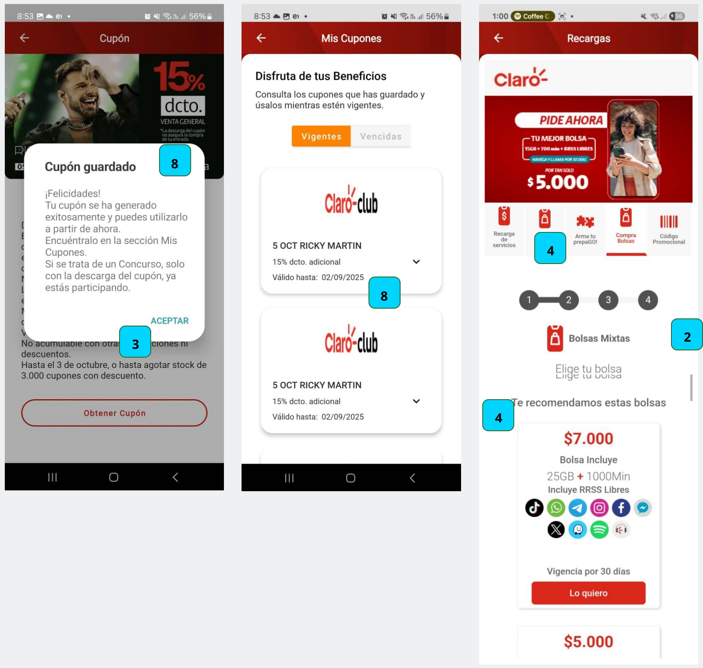
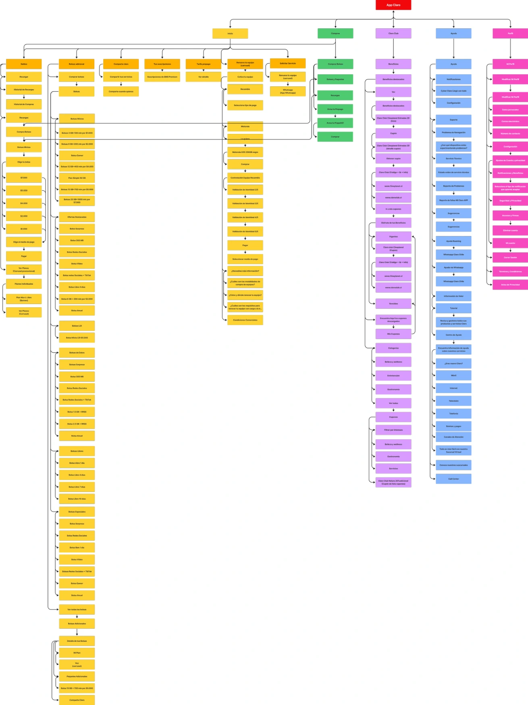
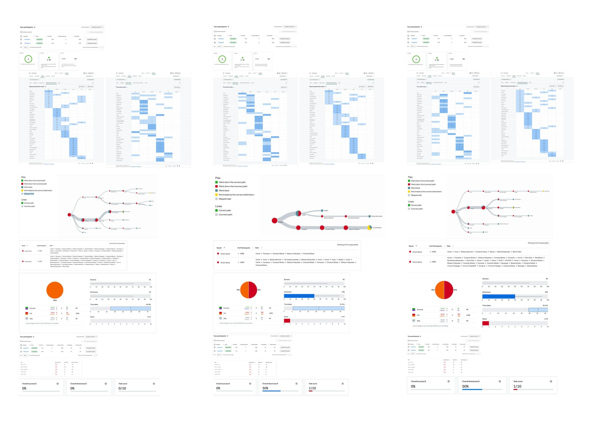
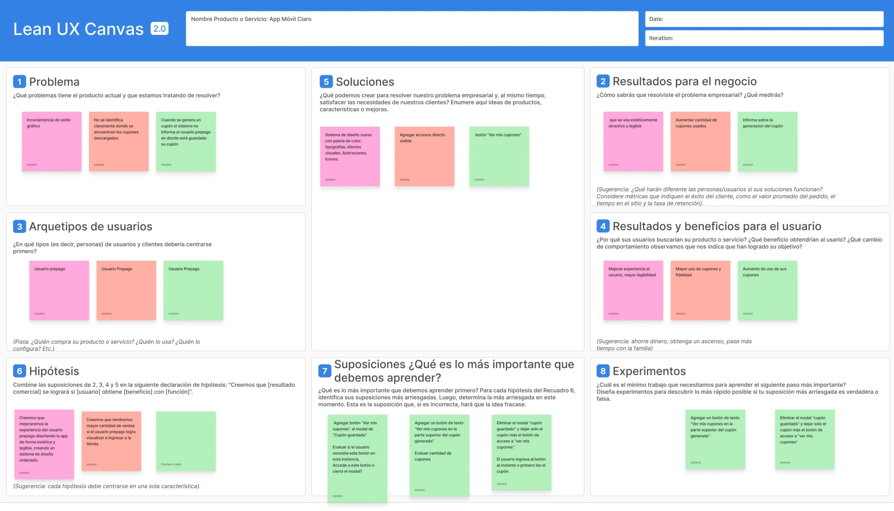
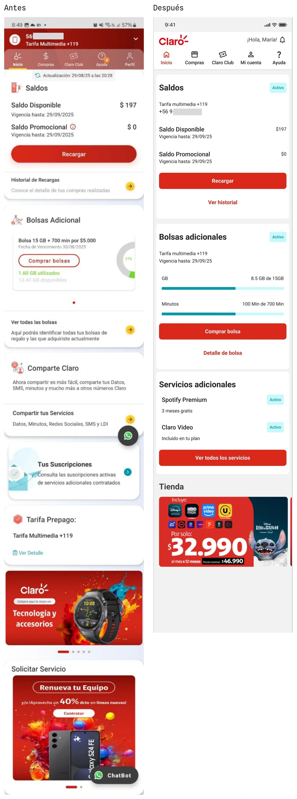

2025 / caso de estudio
Optimización de Flujos: Rediseño App Claro Chile (Cliente Prepago).
Proyecto académico. El objetivo fue identificar puntos de dolor, seleccionar y proponer una interfaz más intuitiva y eficiente para el usuario móvil.
- TEAM
- Susana Tralma
- Herramientas
- Optimal Workshop, Google Form, Figma, Figjam, Figma Make (IA)
- plataforma
- App Móvil
INVESTIGACIÓN
EVALUACIÓN DE USABILIDAD
Heurísticas de Norman Nielsen
- Visibilidad del estado del sistema
- Consistencia entre el sistema y el mundo real
- Control y libertad del usuario
- Consistencia y estándares
- Prevención de errores
- Reconocimiento en lugar de recuerdo
- Flexibilidad y eficiencia de uso
- Diseño estético y minimalista
- Ayuda a los usuarios a reconocer errores
- Ayuda y documentación

ANÁLISIS
MAPEANDO LA EXPERIENCIA
Se mapeó la experiencia de móvil del cliente prepago para buscar fricciones en la experiencia del cliente.
Hallazgos relevantes:
- Gran cantidad de tipos de bolsas prepago.
- Acceso poco accesible a la tienda
- Organización de categorías de beneficios desordenada.
- Filtro de beneficios incompleta.

Evaluación
Test de usuarios
Para completar los hallazgos encontrados en la Evaluación de Heurísticas y Mapa de Navegación, se realizaron test de usuarios como: Tree testing y Card Sorting.
La tarea fue encontrar la “Bolsa video”
Hallazgos:
- Se observa que los usuarios tuvieron dificultad para encontrar el nombre de la bolsa video.
- Se observa que para lograr llegar a la bolsa video el usuario debe revisar cada una de las bolsas.
- Se observa que el usuario no visualiza una opción clara para iniciar su recorrido en la búsqueda.
- Se observa que el usuario identifica la opción del menú compras a las bolsas prepago y éstas actualmente no se encuentran allí.

Síntesis
Lean UX Canvas
Luego de realizar las evaluaciones y mediante los hallazgos, se construyó el Lean UX Canvas en donde se decidió un experimento de mejora a la experiencia de usuario y con el menor impacto a los recursos.
Decisión: Agregar botón “Ver mis cupones” desde una pantalla anterior.

Síntesis
Oportunidades de mejora
De forma académica se decide realizar mejoras desde los hallazgos de heurísticas, mapa de navegación, test de usuarios y Lean UX, hasta aspectos de estilos de interfaz.
UI
- Mejora de elementos de estilos de interfaz como reducción de colores de un mismo tono
- Unidad en iconografía
- Familia tipográfica y orden de jerarquías
- Diagramación de contenido y sus elementos coherentes (bordes, radios, tamaños, botones)
UX
- Cambios en categorías de visualización de bolsas prepago.
- Accesos directos claros a beneficios.
- Opciones de manejo para el usuario como botones touch en filtros.
- Filtros más completos en beneficios, categorías.
- Visualización de opciones que simplifican pantallas de interacciones.
- Creación de tags para beneficios.
ESTILOS
Tipografía
ESTILOS
Color
PROPUESTA
Inicio
Propuesta de diseño escalable con patrones visuales claros, pensada para disminuir la tasa de abandono en las transacciones más críticas y entregar claridad al usuario agregando también nuevos componentes.

PROPUESTAS
FLUJO RECARGA BOLSAS
PROPUESTAS
Flujo cupones
Prototipo
Recorrido por la propuesta de rediseño
Este video muestra la navegación del prototipo de la app Claro y permite observar cómo se conectan sus pantallas e interacciones dentro de la propuesta de rediseño.